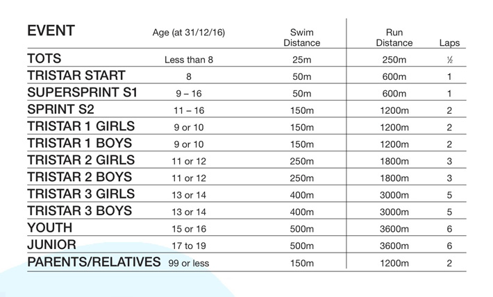

Bolton Junior Aquathon 2016
Sunday 12th June 2016 (12-4pm)
Bolton Tri Club presents the BOLTON JUNIOR AQUATHON 2016 Tristar and youth races are part of the Triathlon England NW Series A great swim, run event for tots, children & young people (plus a race for parents and relatives !) Sunday 12th June 2016, 12 to 4pm Westhoughton Community Leisure Centre Bolton Road, Westhoughton, BL5 3BZ. Goody bags, music, race commentary.
CLICK THE BOOKITZONE LOGO TO BOOK ONLINE...
You will have to create an account with bookitzone if you do not have one already but it is very simple to do.
You can enter more than one person using the same account.
EVENT INFORMATION PACK 2016 CLICK HERE TO VIEW.
Entries open on 18th January 2016 and close at midnight on Monday 6th June. Race schedule will be published after entries close on 6th June.
This event will be run under British Triathlon Federation rules.
British Triathlon members will receive a £1 refund on production of their race licence Non BTF members will be given a day licence that covers insurance
